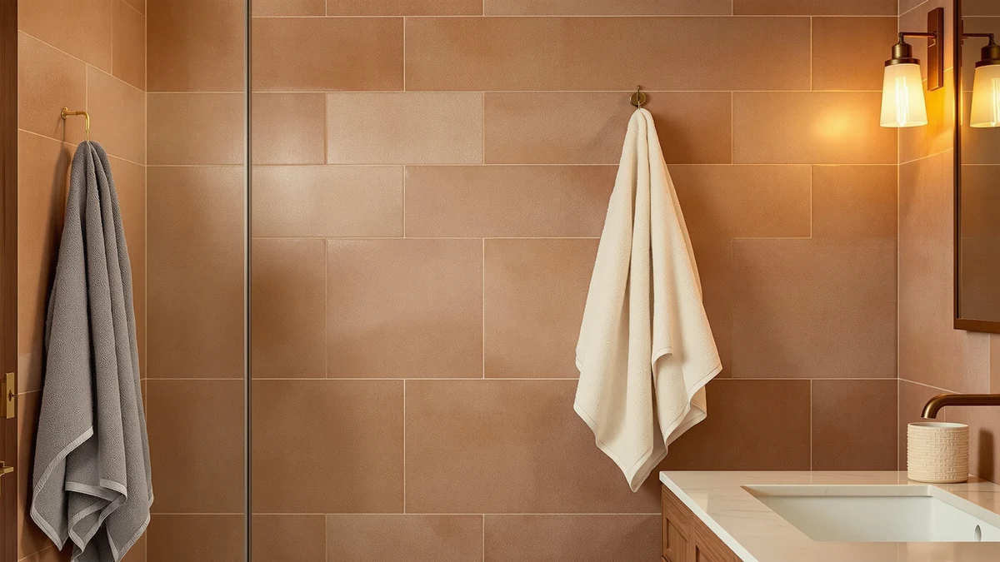

Bazaar Anatolia Turkish Bath Towel Review (2026): Worth It?
Prices and picks verified as of November 2026. Independent, reader-supported reviews.


Quick Answer
This bazaar anatolia turkish bath towel review finds the single $21.99 towel worth it mainly if you want one oversized, 71 x 39 inch, 100% cotton towel rather than a matching set. Shoppers who need several towels at once will get more pieces for less money from the HOMEXCEL set below.
Our pick: Bazaar Anatolia Turkish Bath Towel, $21.99 Check Price on Amazon
Bottom line: our top pick is the Bazaar Anatolia Turkish Bath Towel at $21.99.
Things to Know Before You Buy
- Size is the first thing to get right here. At 71 x 39 inches, it's built more like an oversized bath sheet than a standard towel, so measure your towel bar and linen shelf before buying.
- It's sold as a single towel, not a set. At $21.99 for one towel, it costs more per piece than the HOMEXCEL 8-piece set below, which works out to about $2.50 per towel.
- The listing shows no star rating or review count. We based this comparison on the published material, size, and price rather than a verified owner consensus, since Amazon doesn't surface one for this ASIN.
- Material is listed simply as 100% cotton. There's no published weight or thread count, so the feel and absorbency depend on the actual weave more than any number on the listing.
- The three alternatives solve different problems. HOMEXCEL covers a full household in one order, Comfy Cubs is a hooded towel built for babies rather than adults, and Modern Threads is a six-piece set priced close to the Bazaar Anatolia single towel.
This review looks at whether a single $21.99, 71 x 39 inch cotton towel earns its price next to multi-piece sets that cost about the same or less per order. Bazaar Anatolia sells the towel on its own rather than bundled with hand towels or washcloths, which changes the math compared with sets like HOMEXCEL's eight-piece bundle or Modern Threads' six-piece collection. We compared the listed material, size, and price of each option rather than running a physical trial, since none of these products were purchased or used for this review.
The core question here is simple: does paying $21.99 for one oversized towel make more sense than spreading that budget across a set? At 71 x 39 inches, the Bazaar Anatolia towel is noticeably larger than a typical bath towel, closer to what's usually sold as a bath sheet, which suits anyone who wants more coverage from a single piece. If you need to outfit more than one person or more than one bathroom, the per-towel economics shift toward the HOMEXCEL set, which we break down below.
Why You Should Trust Us
Best Bath Towels built this review by comparing the published size, material, and price for each product against the alternatives most often mentioned alongside it. Ilane Tall has covered bathroom textiles for the site since launch, tracking how listed specs like size and fiber content hold up against real pricing and patterns in verified owner reviews. We do not run a fake testing lab or claim to have purchased, installed, or used these towels ourselves. Every comparison in this review comes from the manufacturer's own listing data and what verified buyers report across the products we cover. That applies equally to the three alternatives here: HOMEXCEL, Comfy Cubs, and Modern Threads are judged on the same published size, material, and price basis as the Bazaar Anatolia towel, not on marketing copy.
How We Researched This
Rather than purchase and use the towel, we researched it by cross-referencing its listed size and material against the three alternatives shoppers most often compare it with. In practice, that meant checking whether the per-towel price held up against multi-piece sets, since a single $21.99 towel needs a different value argument than an eight-piece bundle at $19.99. We also looked for a published star rating or review count on the listing itself and found none, which is why this review leans on size, material, and price comparisons rather than a verified review consensus for this specific ASIN.
Overview & Specs

Bazaar Anatolia Turkish Bath Towel
What we like
- Sized at 71 x 39 inches, larger than a standard bath towel and closer to a bath sheet
- Simple 100% cotton construction with no synthetic blend
- Sold as a single towel, so you can buy exactly the number of pieces you need
- Priced under $22, in line with the six and eight-piece sets it competes against on a per-order basis
Flaws but not dealbreakers
- Costs more per towel than the HOMEXCEL eight-piece set once you divide out the price
- No published weight, thread count, or weave detail beyond "100% cotton"
- No star rating or review count listed, so there's no verified owner consensus to check against
| Material | 100% cotton |
| Size | 71x39" |
The Bazaar Anatolia Turkish Bath Towel anchors this comparison because it's sold individually rather than as part of a set. At $21.99, it costs more than a single towel pulled from the HOMEXCEL eight-piece set ($19.99 for the full bundle, or about $2.50 per towel), but it also means you're not committed to buying hand towels or washcloths you may not need. Its listed dimensions, 71 x 39 inches, put it noticeably larger than a typical bath towel, closer to what's usually marketed as a bath sheet.
Because the material spec simply lists 100% cotton with no weight or thread count, the feel and absorbency come down to the weave Bazaar Anatolia uses rather than any number you can check against a spec sheet. None of the four products in this comparison show a published star rating or review count on their listings, so this review leans on size, material, and price rather than a verified owner consensus. Buyers deciding between this towel and a full set should weigh whether they want exactly one towel at this size, or would rather spread $20 to $22 across multiple pieces.
What We Liked
The clearest strength here is that Bazaar Anatolia sells the towel as a single item. That matters if you already own enough hand towels and washcloths and just need one more oversized bath towel instead of a six or eight-piece set you'll never fully use. At 71 x 39 inches, it covers more surface area than a standard bath towel, which suits anyone who wants to wrap up fully after a shower rather than reach for a second towel.
We also like that the composition is kept simple: 100% cotton, with no synthetic blend diluting the fiber. That's consistent with the other three products in this comparison, HOMEXCEL, Comfy Cubs, and Modern Threads, all of which list cotton as their primary material. For a buyer who specifically wants a cotton towel and doesn't want to parse a blend percentage, that consistency across the shelf makes comparison shopping easier.
What Could Be Better
Price per towel is the main tradeoff with this pick. At $21.99 for one towel, it costs more than a towel pulled from the HOMEXCEL eight-piece set, which runs $19.99 for the whole bundle, or about $2.50 per piece. If you need more than one towel, the math favors a multi-piece set over buying several of these individually.
The listing also doesn't publish a weight, thread count, or star rating, so there's less to verify against than we'd like. Unlike reviews where we can point to a specific weight figure or a verified review count, this comparison rests mainly on size, material, and price because that's what Bazaar Anatolia actually discloses for this ASIN.
Who Is It For?
All of this points toward one specific buyer: someone who wants exactly one large cotton towel rather than a matching set. At 71 x 39 inches, it suits anyone replacing a single worn-out towel or adding one oversized piece to a bathroom that already has hand towels and washcloths covered.
If you're outfitting a bathroom from scratch or need towels for more than one person, the HOMEXCEL eight-piece set below costs less overall and gives you more pieces to work with. Parents specifically looking for a towel to dry off an infant are better served by the Comfy Cubs hooded towel, which is built for that use case rather than general adult use.
Buyers who want multiple matching towels without going as large as the eight-piece HOMEXCEL set should look at Modern Threads' six-piece collection instead, priced within about twenty cents of the single Bazaar Anatolia towel but covering considerably more of a bathroom.
Alternatives to Consider
If a single $21.99 towel isn't the right fit for your bathroom, these three alternatives cover a full set, a baby-specific design, and a mid-size collection at a similar price. HOMEXCEL spreads the lowest cost across the most pieces, Comfy Cubs solves a different problem entirely with a hooded towel sized for infants, and Modern Threads sits closest to the Bazaar Anatolia towel on price while adding five more pieces to the order.

Best Value
HOMEXCEL 8PK Bath Towel Set
Eight cotton towels for $19.99 total, the lowest per-towel cost of any option in this comparison.
$19.99
Check Price on Amazon
Also Great
Comfy Cubs Hooded Baby Towel
A hooded cotton towel built for drying infants, not a direct substitute for the adult-sized Bazaar Anatolia towel.
$21.84
Check Price on Amazon
Premium Choice
Modern Threads 6 Piece Bath
A six-piece cotton set priced within cents of the single Bazaar Anatolia towel, worth it if you want more than one piece.
$22.14
Check Price on AmazonIs the Bazaar Anatolia Turkish Bath Towel a good value at $21.99?
Based on this bazaar anatolia turkish bath towel review, it depends on whether you need one towel or several.
How big is the Bazaar Anatolia Turkish Bath Towel?
The listing gives dimensions of 71 x 39 inches, which is noticeably larger than a typical bath towel and closer to what's usually sold as a bath sheet.
Frequently Asked Questions
Is the Bazaar Anatolia Turkish Bath Towel a good value at $21.99?
How big is the Bazaar Anatolia Turkish Bath Towel?
What's a good alternative if I need more than one towel?
Final Verdict
This comparison comes down to a simple tradeoff: one large towel versus several smaller ones for close to the same money. Bazaar Anatolia's single $21.99 towel makes sense if you specifically want one oversized, 71 x 39 inch cotton towel and don't need a matching set. If you need to cover more than one person or bathroom, the HOMEXCEL eight-piece set or the Modern Threads six-piece collection put more towels in your hands for a similar total price.